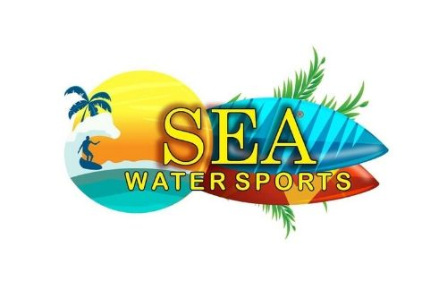

Sea Water Sports is a travel app with local recommendations: restaurants, bars, markets, places to visit and the best time to go, written by local guides, alongside bookable experiences ranging from adventurous to relaxed.
My contribution:
- End-to-end development of the customer-facing Android app.
- End-to-end development of an internal CRM Android app.
- Managing Play Store releases and app store optimisation.
- Acting as technical adviser when the company dealt with other service providers.
The app supported devices back to Android 4.1 (API 16), to reach as many phones as possible, while building against Android 10 (API 29) so newer phones got the full experience.
Details
- Role
- Android development, app logo design, web development
- Dates
- August to October 2019
- Links
- seawatersports.com · Google Play